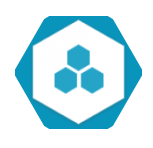
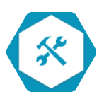
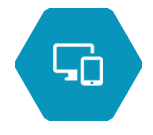

OUR SERVICES
Dedicated Agile Resources
Leveraging on our talented pool of skilled engineers and our software outsourcing know-how and expertise, we provide dedicated development resources that can be utilized to develop high-value software solutions with an attractive price model and high quality standards.
Thanks to our expertise on Agile development methodologies, we are able to provide a high degree of collaboration between the client and the project team, ensuring an early and predictable delivery, reducing costs and risk.
The dedicated resources model is the best approach for mid-long term commitment. The engineers will become part of your team allowing you a high degree of control and involvement with a very competitive price model.
Project Delivery
Thanks to the collaboration between our experienced management team and our high-skilled engineers, we are able to develop software applications ensuring on-time delivery and high quality outcomes.
We provide our technology expertise to find the best solution in the market in order to meet your business needs, following best practices in software development and a transparent process with frequent deliveries and reviews.
This model is the best choice when your project requirements, scope and specifications are clear.
Website Development
Our strong web development team follows web development best practices ensuring the best performance and client-side/server-side approach to optimize business requirements of our clients.
We build cost friendly frameworks like CMS while securing quality and the implementation of optimal lead designs that are responsible and focus on balancing usability and operational efficiency.
Smart Device (Mobile) Solution
Our Mobile team has an extensive experience developing mobile applications (M-Commerce, Games and Enterprise Mobility Solutions), being able to provide best in class mobile services and solutions for iOS and Android devices.
Thanks to our years of experience with mobile technologies and following an effective and efficient methodology, we are able to improve client’s mobile strategy offering high quality native and hybrid mobile applications.
In-depth knowledge of Android SDK and iOS SDK, along with consistent and reliable development and testing best practices, allows our team to achieve the best User Interface and User Experience without neglecting high security standards.